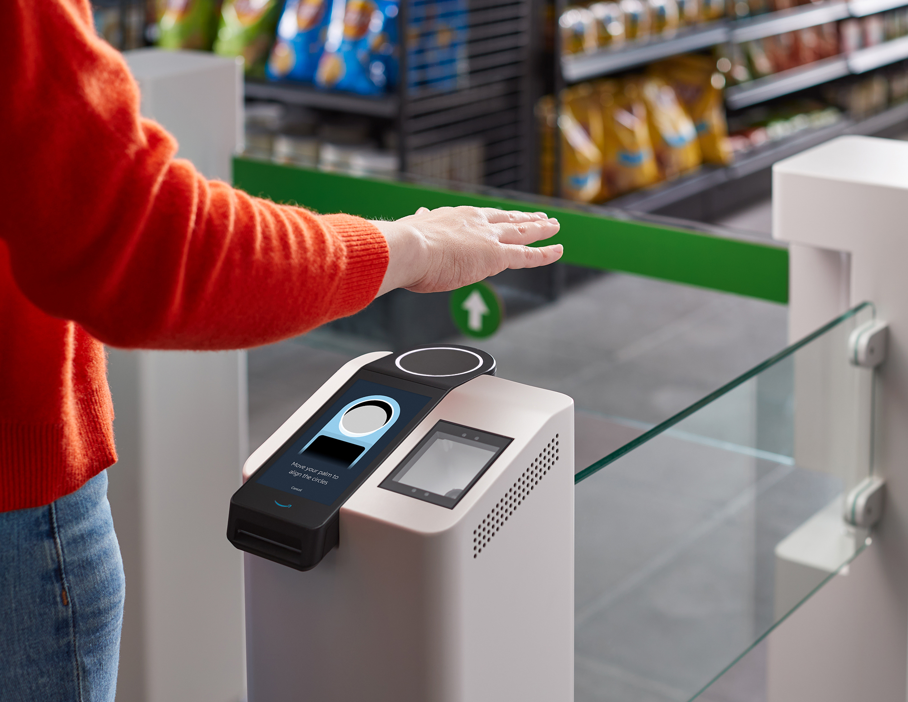

Study Details
Researchers
Kenneth Wall
Aditya Iyer
Methodology
Qualitative Interviews & Trust Mapping
Deliverables
UX Audit, Data Sheets, Analysis Report
Project Overview
Comprehensive research analyzing user trust in Amazon One, a biometric payment system. This study dives deep into the psychological hurdles and privacy concerns that users face when interacting with palm-scanning technology in retail environments.
Research Artifacts
Access the primary data and the comprehensive analysis report used in this study.
Core Research Objective
"How does biometric data collection impact the perceived safety of a frictionless checkout experience?"